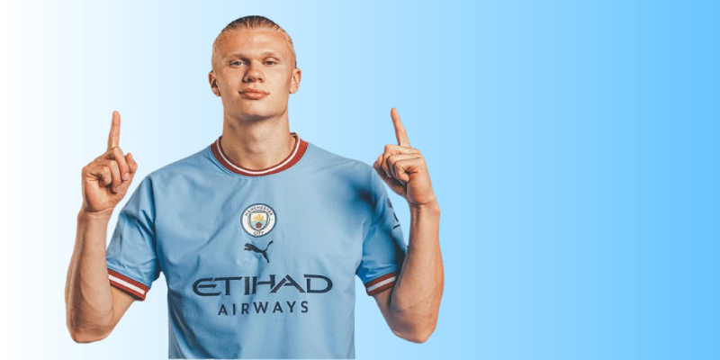

Erling Haaland tekent nieuw NEGEN-jarig contract bij Manchester City
Erling Haaland heeft inderdaad een nieuw contract getekend bij Manchester City dat hem tot 2034 aan de club bindt. Dit contract is historisch, omdat het een van de langste contracten ooit is in de geschiedenis van de Premier League.
Volgens bronnen zoals de officiële Premier League-website en Manchester City zelf, is dit contract een strategische zet om Haaland's waarde te behouden en zijn toekomst bij de club veilig te stellen.